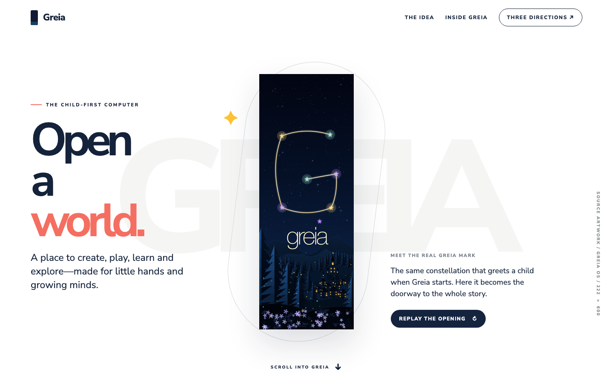
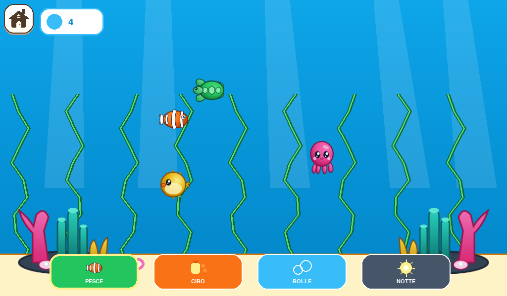
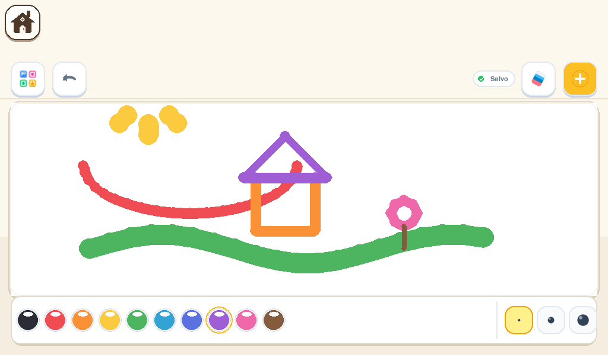

01 / Official site work in progressTHE
THE
GREIA
SITE.
The official Greia site in progress: real boot opening, English product captures, OS story, Parents, agent-made Activities, voices, Downloads and Library.
Visit the site ↗For parents / Explore the real Greia

02 / Spatial explorationTHE
THE
WONDER
MAP.
A world without one route. Drag, zoom and open Greia's four places in any order.
Move the map ↗Four places / One world


03 / Direct playTHE
THE
SCRIBBLE
MACHINE.
Draw across the page, change ink, place character stickers and switch worlds.
Make a mark ↗Your hand changes the page
